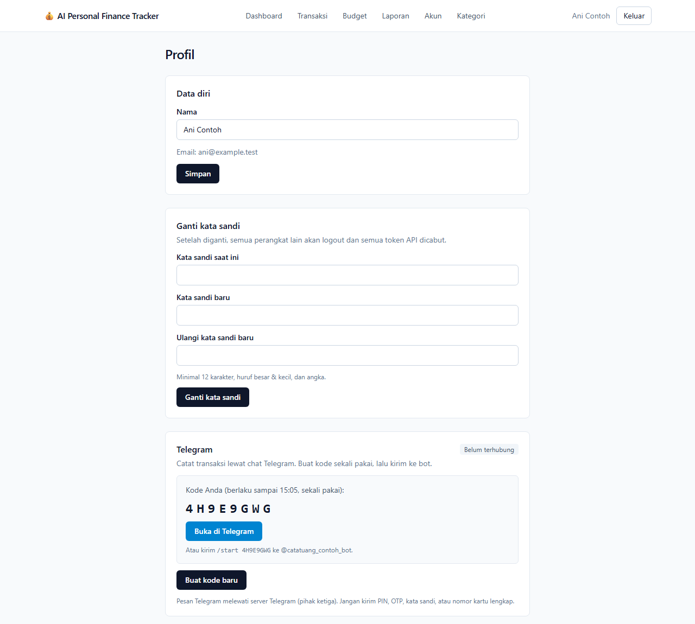
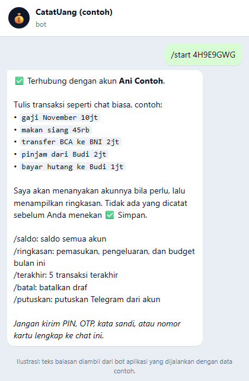
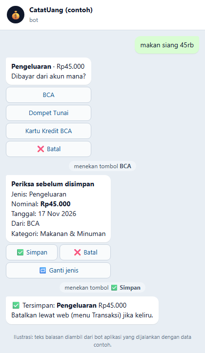
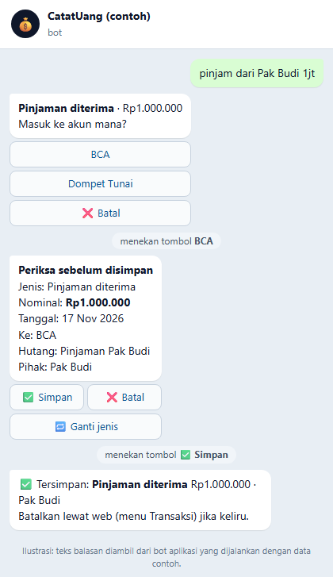
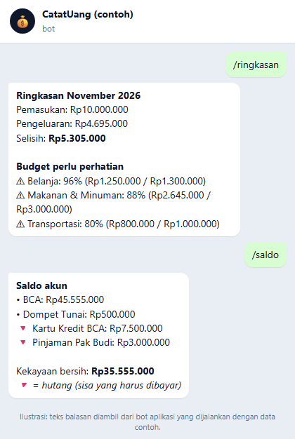
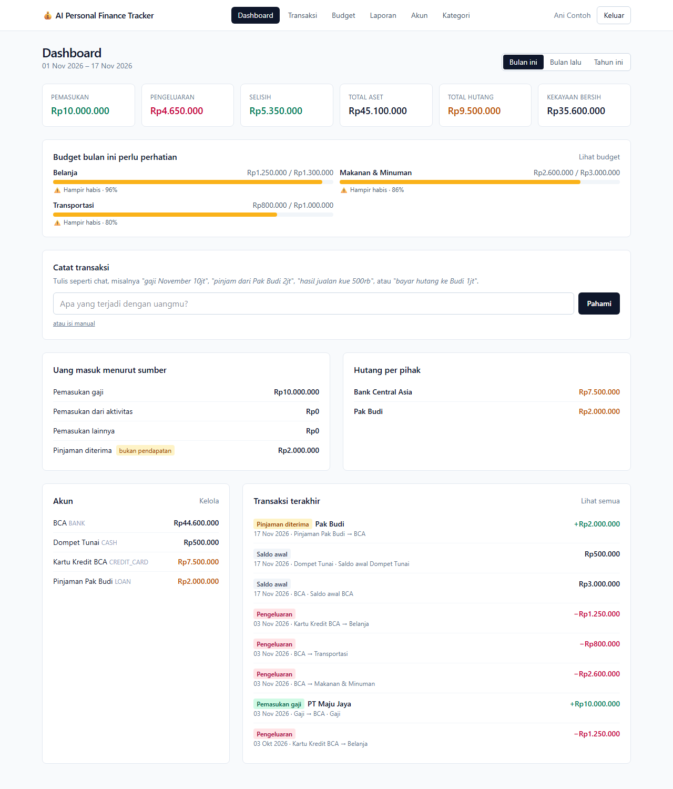
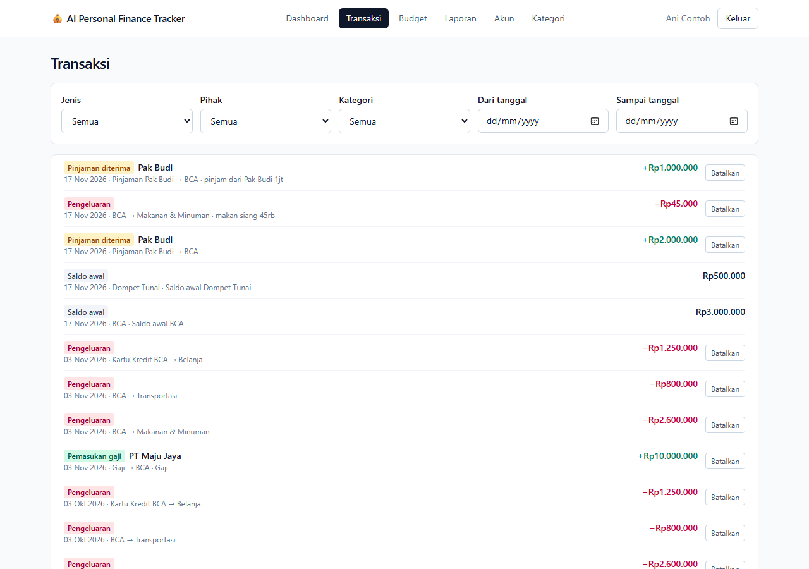
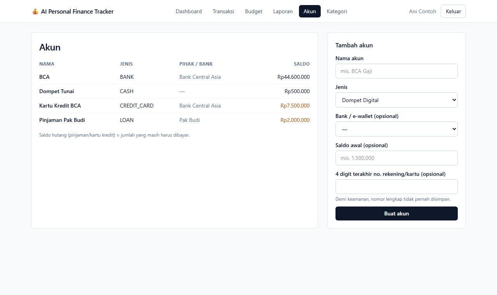
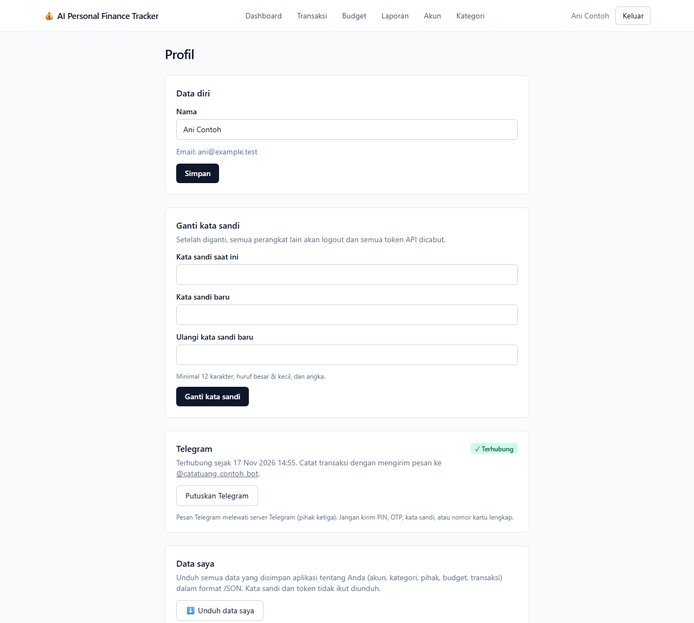

A1. Buat bot di BotFather
- Di Telegram, buka akun resmi @BotFather (bertanda centang biru) dan kirim
/newbot. - Isi nama tampilan bot, lalu username yang berakhiran
bot, misalnyacatatuang_keluarga_bot. - BotFather membalas dengan token seperti
123456789:AA…. Token ini adalah kunci penuh bot, jadi perlakukan seperti kata sandi. - Agar bot tidak bisa dimasukkan ke grup, kirim
/setjoingroups, pilih bot Anda, lalu pilih Disable. Aplikasi memang hanya melayani chat pribadi.
Token bocor? Kirim /revoke ke BotFather untuk membuat token baru, ganti nilainya di .env, lalu jalankan ulang langkah A3.
A2. Isi konfigurasi .env
Buat secret webhook acak, minimal 32 karakter:
php -r "echo bin2hex(random_bytes(32));"Lalu isi di .env server (jangan di .env.example atau di Git):
APP_URL=https://keuangan.domain-anda.id
TELEGRAM_BOT_TOKEN=123456789:AA... # dari BotFather
TELEGRAM_BOT_USERNAME=catatuang_keluarga_bot # tanpa @
TELEGRAM_WEBHOOK_SECRET=hasil-perintah-di-atas
TELEGRAM_LINK_TTL_MINUTES=10 # masa berlaku kode tautanJalankan php artisan migrate (membuat tabel telegram_links) dan php artisan config:cache di produksi.
Selama token atau secret masih kosong, bot nonaktif: endpoint webhook menjawab 404, dan halaman Profil menampilkan "Bot Telegram belum diaktifkan".
A3. Daftarkan webhook
Telegram mengirim setiap pesan ke https://domain-anda/api/telegram/webhook. Daftarkan alamat itu dengan:
php artisan telegram:webhook set # memakai APP_URL
php artisan telegram:webhook set --url=https://keuangan.domain-anda.id
php artisan telegram:webhook info # cek status & error terakhir
php artisan telegram:webhook delete # matikan webhookPerintah set juga mendaftarkan menu perintah bot (/saldo, /ringkasan, dan lainnya), hanya menerima jenis update message dan callback_query, serta membuang update lama yang tertunda.
Wajib HTTPS. Telegram tidak mengirim ke alamat http://. Perintah akan menolak jika URL tidak diawali https:// atau secret kurang dari 32 karakter.
A4. Uji di komputer lokal
localhost tidak bisa dijangkau Telegram, jadi gunakan tunnel HTTPS (misalnya Cloudflare Tunnel atau ngrok) yang meneruskan ke php artisan serve:
php artisan serve # http://127.0.0.1:8000
cloudflared tunnel --url http://127.0.0.1:8000 # memberi https://xxxx.trycloudflare.com
php artisan telegram:webhook set --url=https://xxxx.trycloudflare.comPakai bot terpisah untuk uji coba dan data contoh. Jangan gunakan bot produksi atau data keuangan asli di tunnel sementara. Setelah selesai, jalankan php artisan telegram:webhook delete.
Tes otomatis tidak memerlukan Telegram: php artisan test --filter=TelegramBotTest.
A5. Keamanan & privasi (ISO/IEC 27001:2022, UU PDP)
| Kontrol | Yang diterapkan aplikasi |
|---|---|
| Keaslian webhook | Setiap panggilan harus membawa header X-Telegram-Bot-Api-Secret-Token yang cocok (dibandingkan secara constant-time). Tanpa itu: 403. |
| Penautan akun | Kode 8 karakter, sekali pakai, berlaku 10 menit. Hanya hash-nya yang disimpan, dan kode baru membatalkan kode lama. Maksimal 5 percobaan per chat per 10 menit, dan maksimal 5 kode per pengguna per 10 menit. |
| Isolasi data | Satu chat untuk satu pengguna. Chat yang belum terhubung tidak menerima data apa pun. Tombol pilihan akun diperiksa ulang terhadap akun milik pengguna itu sendiri. |
| Tidak ada pencatatan tanpa konfirmasi | Transaksi hanya dicatat setelah ✅ Simpan. Kunci idempotensi per draf mencegah pencatatan ganda. |
| Minimisasi data | Yang disimpan hanya chat_id, tanpa username, nomor HP, atau foto profil. Draf disimpan di cache selama 15 menit. Teks pesan tidak dicatat di log. |
| Pencabutan akses | Ganti kata sandi otomatis memutus Telegram. Pengguna juga bisa memutus lewat /putuskan atau dari web. |
| Audit | telegram.link_code_issued, telegram.linked, telegram.unlinked, dan setiap transaksi dengan channel TELEGRAM. |
| Hak akses data | Status tautan Telegram ikut dalam "Unduh data saya". |
Perlu tindakan pengelola, belum sesuai bila diabaikan:
1. Telegram adalah pihak ketiga dan servernya berada di luar Indonesia. Isi pesan (nominal, nama pihak, saldo pada /saldo) melewati server Telegram. Cantumkan hal ini di kebijakan privasi, minta persetujuan pengguna, dan catat sebagai transfer data pribadi ke luar negeri menurut UU PDP.
2. Simpan token bot dan secret di .env atau secret manager saja. Jangan di Git, chat, atau tiket.
3. Produksi wajib HTTPS dan APP_DEBUG=false.
B1. Hubungkan akun Anda
- Masuk ke aplikasi web, lalu klik nama Anda di kanan atas untuk membuka Profil. Di bagian Telegram, klik Buat kode.
- Muncul kode 8 karakter yang berlaku 10 menit. Klik Buka di Telegram, atau kirim
/start KODEke bot secara manual. - Bot membalas ✅ Terhubung dengan akun … beserta contoh cara pakai. Status di Profil berubah menjadi ✓ Terhubung.


Jaga kode Anda. Siapa pun yang memakai kode itu lebih dulu akan terhubung ke akun Anda. Jangan bagikan atau tangkap layar kodenya. Jika terlanjur bocor, klik Buat kode baru: kode lama langsung tidak berlaku.
Bot hanya bekerja di chat pribadi. Di grup, bot menolak demi privasi.
B2. Mencatat transaksi
- Kirim kalimat biasa, misalnya makan siang 45rb.
- Jika Anda punya lebih dari satu akun, bot bertanya "Dibayar dari akun mana?". Tekan salah satu tombol.
- Bot menampilkan Periksa sebelum disimpan: jenis, nominal, tanggal, akun, dan kategori.
- Tekan ✅ Simpan. Jika jenisnya salah, tekan 🔁 Ganti jenis. Untuk membatalkan, tekan ❌ Batal.

Contoh kalimat
| Kirim | Dicatat sebagai |
|---|---|
| gaji November 10jt | Pemasukan gaji |
| hasil jualan kue 500rb | Pemasukan dari aktivitas |
| parkir 5rb | Pengeluaran · Transportasi |
| beli token listrik 200rb | Pengeluaran · Listrik |
| transfer BCA ke BNI 2jt | Transfer antar akun sendiri |
Jika nominalnya lupa ditulis, bot akan bertanya "nominalnya berapa?". Balas saja, misalnya 350rb.
Tanggal transaksi selalu hari ini. Untuk tanggal lain, catat lewat web.
B3. Pinjaman & pembayaran hutang

pinjam dari Pak Budi 1jt menambah kas dan hutang ke Pak Budi. Pinjaman ini bukan pendapatan. Jika belum ada hutang ke Pak Budi, aplikasi membuat akun "Pinjaman Pak Budi" secara otomatis.
bayar hutang ke Budi 500rb mengurangi hutang tersebut. Jika Anda punya beberapa hutang ke pihak yang sama, bot menanyakan "Hutang mana yang dibayar?".
Untuk membayar tagihan kartu kredit, kirim bayar kartu kredit 2jt, lalu pilih kartunya.
Uang yang Anda pinjamkan ke orang lain (piutang) belum didukung. Bot akan memberi tahu dan tidak mencatat apa pun.
B4. Perintah bot
| Perintah | Fungsi |
|---|---|
/saldo | Saldo semua akun dan kekayaan bersih |
/ringkasan | Pemasukan, pengeluaran, dan budget yang hampir habis bulan ini |
/terakhir | 5 transaksi terakhir |
/batal | Membatalkan draf yang sedang berjalan |
/bantuan | Cara pakai dan contoh kalimat |
/putuskan | Memutus Telegram dari akun Anda |

Privasi: balasan /saldo dan /ringkasan berisi data keuangan Anda dan tersimpan di riwayat chat Telegram. Aktifkan kunci layar atau Passcode Lock di Telegram, dan hapus chat jika ponsel dipakai bersama.
B5. Cek hasilnya di dashboard
Transaksi dari Telegram langsung muncul di web: di Dashboard (ringkasan, budget, transaksi terakhir) dan di menu Transaksi.



B6. Memutus Telegram
- Dari Telegram: kirim
/putuskan. - Dari web: buka Profil → Telegram → Putuskan Telegram.
- Otomatis: setiap kali Anda mengganti kata sandi.

Kehilangan ponsel? Segera ganti kata sandi dari web. Telegram, semua sesi login lain, dan token API akan langsung dicabut.
B7. Tanya jawab
Bot bilang "Chat ini belum terhubung".
Buat kode baru di Profil → Telegram, lalu kirim /start KODE. Kode berlaku 10 menit dan hanya bisa dipakai sekali.
Bot bilang "Draf ini sudah kedaluwarsa".
Draf berlaku 15 menit. Kirim ulang kalimat transaksinya.
Saya menekan ✅ Simpan dua kali.
Transaksi tetap hanya tercatat sekali.
Bisakah satu chat dipakai dua akun, atau satu akun dipakai dua chat?
Tidak. Satu akun hanya terhubung ke satu chat. Menautkan chat baru otomatis memindahkan tautannya.
Kategori yang dipilih bot salah.
Tekan ❌ Batal lalu catat lewat web, tempat kategori bisa dipilih bebas. Jika sudah terlanjur tersimpan, batalkan di menu Transaksi lalu catat ulang.